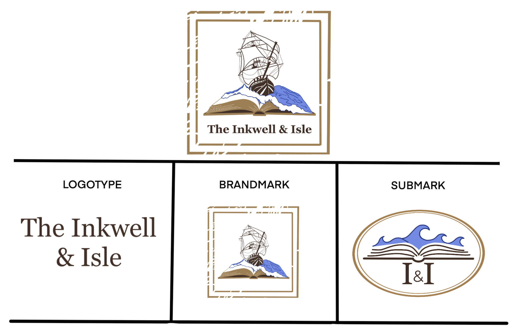
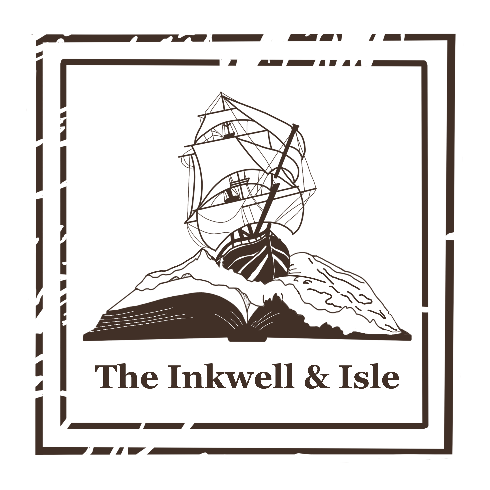
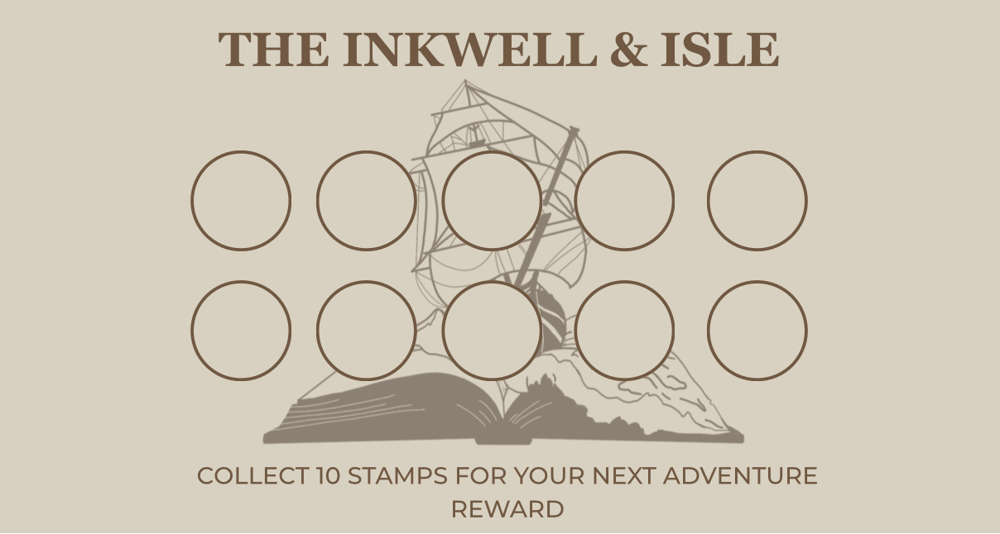
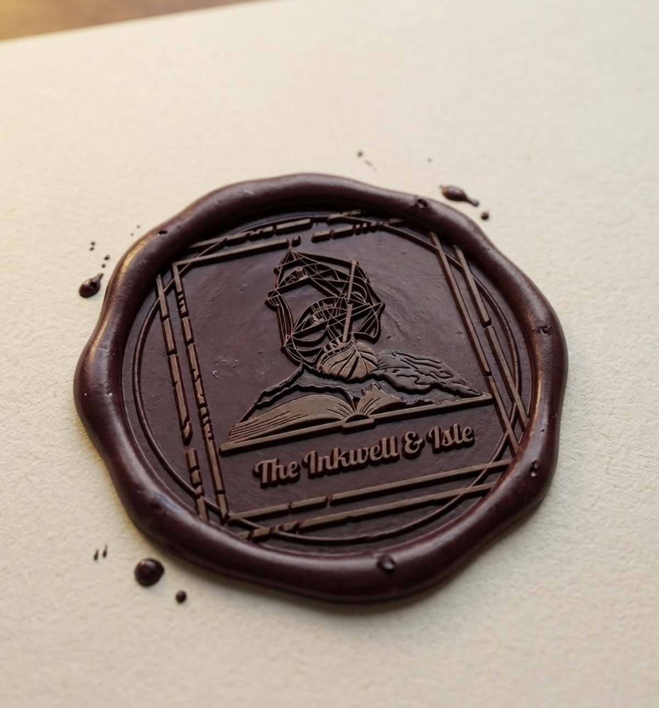
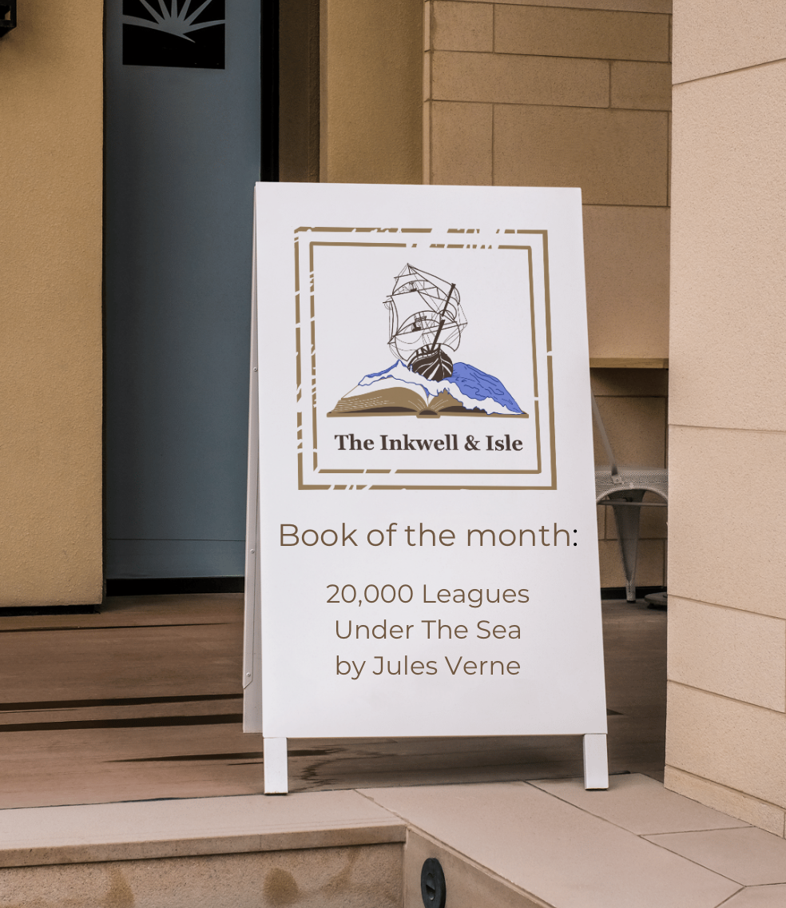
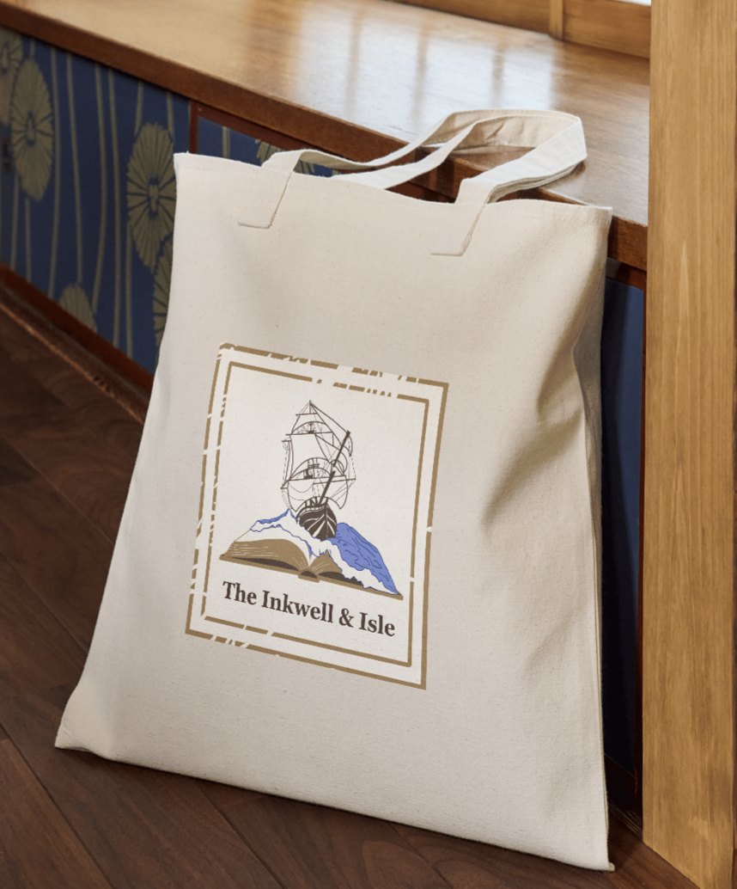
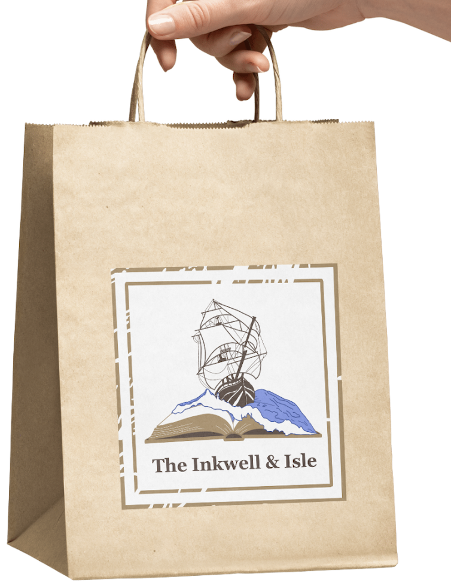

An independent "destination" bookstore perched on a coastal cliffside, specialising in rare
travelogues, nautical maps, and adventure fiction. The brief: build a brand that feels like
the private study of a 19th-century explorer — whimsical, scholarly, and unmistakably coastal
— curated for a modern audience.
As a challenge for myself, I asked AI to create a fake business and their wants for branding. I then created branding and a style guide for that.

A stamp-style emblem built around ship and book imagery — designed to look as good embossed on a linen book cover as it does printed on a shop window. Shown across light, parchment, and dark backgrounds.

On White
On Ink BlueDeep teal, weathered parchment, oxidised copper, and rich ink blue — colours that evoke salt air, aged paper, and the worn patina of a well-loved atlas.
A classic serif with elegant ligatures for display headings, paired with a handwritten-style italic that reads like field-journal notes — scholarly but full of personality.
The Horizon Awaits
Classic Serif — high contrast strokes, elegant ligaturesAa Bb Cc Dd Ee — 0123456789
Navigation & Discovery
Handwritten Script — field notes & captionsCurious minds, open horizons.
Every purchase is placed in a branded paper bag or wrapped in paper with a branded wax seal. Other items are seen with the logo, such as the outdoor sign with monthly events or Book of the Month, a tote bag, a sticker, and a loyalty card.




